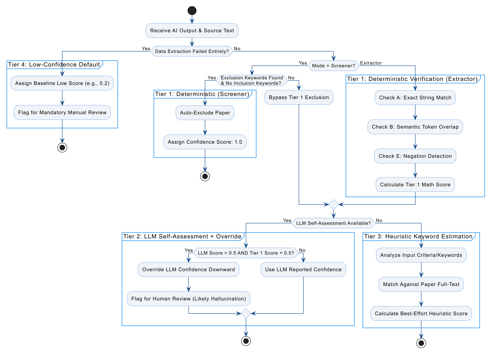
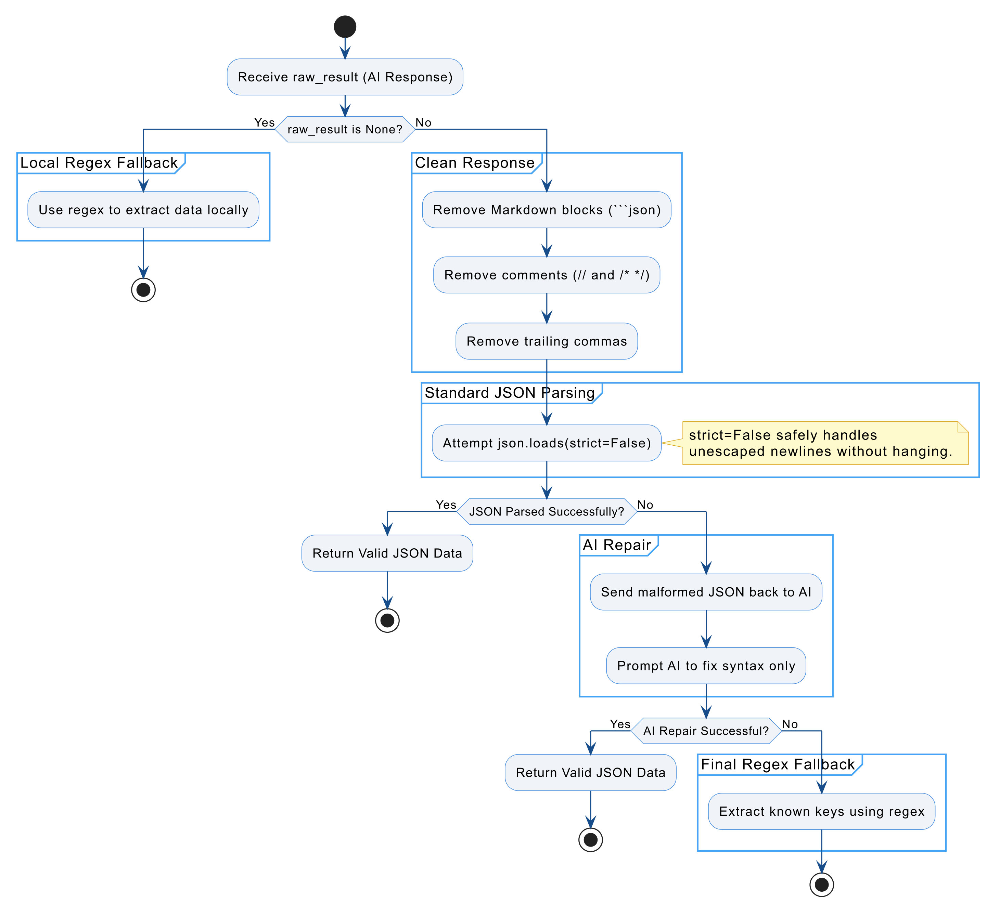
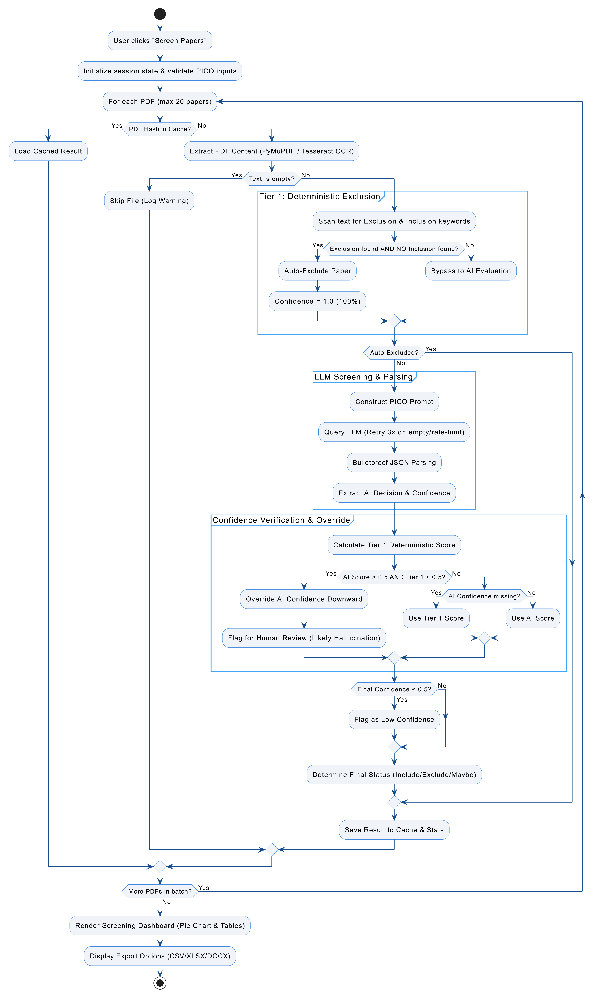
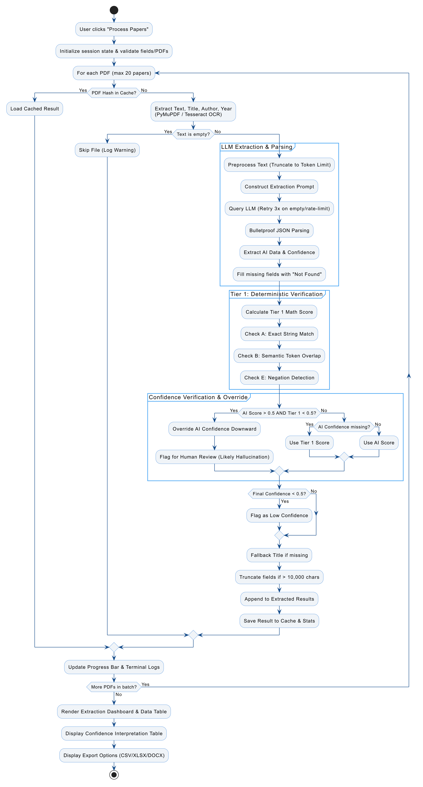

Confidence Scoring System
This system implements a hierarchical four-tier confidence model designed to maximize precision and minimize false classifications during automated paper screening and data extraction. The logic prioritizes deterministic rule-based decisions before progressively falling back to algorithmic and heuristic estimation only when necessary.
Overview
The confidence score reflects how reliably a paper has been classified or extracted. Scores range from 0.0 to 1.0, where higher values indicate stronger certainty and lower values explicitly flag the need for manual review.
The system operates in the following order:
- Deterministic Rule-Based Classification & Verification (Screener & Extractor)
- Per-Criterion LLM Screening with Evidence Quotes (v4.0.0)
- Heuristic Keyword Estimation
- Low-Confidence Default
Each screened paper is judged three independent times at temperature 0. Every call evaluates all criteria on the full text and returns a verdict plus a verbatim supporting quote for each criterion. The three samples are majority-voted per criterion, and the agreement rate across samples becomes the paper's confidence score. A fourth tiebreaker call runs only when the samples disagree on a criterion. Papers the Tier-1 gate auto-excludes cost 0 API calls.
Each tier is only activated if the previous tier fails to produce a valid and reliable result.

Tier 1: Deterministic Rule-Based & Verification
Highest Priority
Purpose: Eliminate ambiguity using explicit user-defined rules and verify AI outputs against source text.
Screener Logic (v4.0.0 guarded gate):
- The system scans for exclusion and inclusion keywords, but a keyword only counts when it survives deterministic guards: word-boundary matching ("men" no longer matches "women"), a negation guard ("no acute LBP" is not a population hit), and a background-context guard (mentions in background prose, far from eligibility language, are ignored).
- A lone single-word exclusion criterion never decides a paper on its own — it needs a second qualifying criterion.
- If qualifying exclusion keywords are detected without any corresponding inclusion keywords, the paper is automatically classified as Excluded with a confidence score of 1.0 (100%).
- Everything else — including papers where both exclusion and inclusion keywords are present — is deferred to the AI, and every discarded keyword hit is logged for audit.
Extractor Logic:
- The system deterministically verifies the AI's extracted data against the source text using Exact String Matching and Token Overlap for paraphrased text.
- Negation Detection is applied to ensure the AI didn't miss a "not" or "failed" that changes the meaning of the extracted data.
Tier 2: Per-Criterion LLM Screening (With Override Logic)
Primary Mechanism
Purpose: Leverage the model’s internal reasoning and evidence-based judgment.
Logic:
- The LLM judges each criterion separately and must cite the supporting sentence from the paper. Every quote is verified against the paper text — an unfindable quote downgrades the judgment.
- Each paper is judged three independent times (3 API calls per paper) and the samples are majority-voted per criterion. The sample agreement rate is the confidence score — a measured property of the judgments, not a self-assessment.
- Recall-first exclusion: a paper is only auto-excluded when exclusion evidence is unanimous across samples and grounded in a quote. Split votes and weak evidence are referred, never decided.
- Tiebreaker adjudication: when samples disagree on a criterion, a senior-reviewer call settles it against the competing quotes.
- Every paper leaves with a priority score so the human review queue is worked highest-first.
- Override Logic: If the AI claims high confidence (> 0.5) but the Tier 1 Deterministic Check fails (score < 0.5), the system overrides the AI's confidence score downward and flags the paper for human review. This prevents the AI from being confidently wrong (hallucinating).
Tier 3: Heuristic Estimation
Fallback
Purpose: Provide a probabilistic estimate when LLM confidence is unavailable.
Triggered when: The LLM fails to return a valid confidence value (e.g., formatting or JSON parsing errors).
Screener Logic:
- The system analyzes the users input Inclusions and Exclusions critiera and matches with the paper's full-text and determines the confidence level.
Extractor Logic:
- The system analyzes Extracted data with the paper's full-text and determines the confidence level.
Tier 4: Low-Confidence Default
Last Resort
Purpose: Explicitly flag unreliable outputs.
Triggered when: Data extraction fails entirely (e.g., Regex failure or missing sections).
Logic:
- Assigns a baseline low confidence score (e.g.,
0.2). - Automatically flags the result for mandatory manual review.
Confidence Score Interpretation
This layered approach ensures that high-confidence decisions are automated safely, while ambiguous or unreliable cases are clearly flagged for human oversight.
| Confidence Score | Classification | Description | Implication |
|---|---|---|---|
| 0.9 – 1.0 | Deterministic Match | Extracted data verified via exact string match or near-perfect token overlap. For screening: all three samples agreed and the driving criteria carry grounded quotes. | Safe to accept |
| 0.6 – 0.89 | High Confidence | AI output grounded in source (extractor), or a solid voting majority with minor dissent (screening). | Review optional |
| 0.4 – 0.59 | Moderate Confidence | Partial overlap detected. Ambiguous context or loosely met criteria. | Manual verification recommended |
| 0.1 – 0.39 | Low Confidence | Poor textual overlap, negation detected, or low sample agreement. AI score overridden by Tier 1 math due to likely hallucination. | High risk of error |
| < 0.1 | Unreliable | Derived from fallback or failed extraction methods. Complete lack of text grounding. | Mandatory manual review |
Parsing Pipeline
Purpose: Safely parse API/AI responses, even if the JSON is broken or missing.

Flow
- If
raw_resultisNone
→ Use regex to extract data locally (extractor only; every fallback use is counted viaparser.fallback_uses()). - Clean the response
→ Remove Markdown, comments, and trailing commas. - Try standard JSON parsing
→json.loads(usingstrict=Falseto safely handle unescaped newlines without hanging). - If that fails, use AI repair
→ Ask AI to fix the JSON syntax. - Final fallback
→ Extract known keys using regex. Note: the v4.0.0 screener never uses this fallback — unusable screening samples are dropped, and a paper with no usable samples is referred as "Maybe" instead of being decided by regex.
Guarantee
- Never crashes
- Always attempts to recover usable data
OCR – Advanced Image Data Extraction
The system uses Optical Character Recognition (OCR) to extract structured data from images before parsing. It was initially built using PaddleOCR for higher accuracy and better handling of complex layouts, noisy images, and multi-line text. However, due to streamlit deployment constraints, it now uses pytesseract (Google Tesseract-OCR wrapper) as the default OCR engine.

ReviewAid PaddleOCR version (run with streamlit locally): ReviewAid-OCR
Official Tesseract wrapper: pytesseract GitHub
How ReviewAid Works (v4.0.0)
End-to-end walkthrough of both engines - what happens at every step, what goes where, and why it is built that way. The decision architecture is: Tier-1 deterministic gate → Tier-2 LLM screening → deterministic confidence override. Humans stay in the loop throughout.
The Life of a Paper - Screener
- Upload & deduplicate. Every PDF is hashed (SHA-256). An identical file reuses the cached decision from earlier in the batch - no repeated API calls. Why: same paper, same answer, zero cost.
- Text extraction. PyMuPDF pulls the full text plus candidate title, author and year. The text is cleaned and token-capped before any AI call. Why: models see a bounded, clean input, and evidence quotes are checked against this exact text so they stay verifiable.
- Tier-1 guarded gate - 0 API calls. Exclusion and inclusion keywords are scanned with the v4.0.0 guards: word-boundary matching, a negation guard, a background-context guard, and a corroboration rule for one-word criteria. The gate fires only on exclusion evidence that is unanimous across its own checks and grounded. Why: obvious exclusions cost nothing and shrink the AI stage; weak keyword evidence refers instead of deciding - the v3.0.0 lesson.
- Per-criterion LLM stage - 3 API calls. Each call sees every criterion plus the full text and returns, for every criterion, a verdict (yes / no / unsure) and a verbatim supporting quote. Quotes are verified against the text: a quote that is not in the paper downgrades that judgment to unsure. Why: judging criteria one-by-one beats one holistic verdict, and quotes make every decision checkable by a human in seconds.
- Majority vote + agreement. The three samples are majority-voted per criterion. The agreement rate across samples becomes the paper's confidence score. Why: three independent readings outvote single-sample errors and model refusals, and agreement is a measured property instead of a self-reported guess.
- Recall-first decision. Exclude only on exclusion evidence that is unanimous and grounded, with no inclusion criterion met. Include only when the driving inclusion criteria clear the agreement floor (0.67) with no exclusion met. Everything else - conflicts, shaky agreement, unusable samples - is a Maybe referral. Why: wrongly excluding a study is the cardinal sin of systematic reviews; weak evidence must refer, never decide.
- Tiebreaker adjudication. If the samples split on a criterion, one extra senior-reviewer call sees the competing votes and quotes and issues a ruling, grounded like every other judgment. Why: contested papers deserve a second opinion, not a coin flip.
- Confidence override (unchanged from v3). If confidence is high but the Tier-1 deterministic score is low, confidence is overridden downward and the paper is flagged. Why: the deterministic layer catches confident hallucination.
- Decision routing. Papers land in the Include / Exclude / Maybe tables, each row carrying confidence, a priority score, the reason and the full per-criterion trail.
What Each of the 3 Screening Calls Is For
- Call #1, #2, #3 - the same prompt shape (all criteria + full text, temperature 0): three independent readings of the paper. Each returns per-criterion verdicts with verbatim quotes. Majority vote per criterion; agreement across the three becomes the confidence.
- Call #4 (conditional tiebreaker) - runs only when the samples split on a criterion. It receives the split votes and the competing quotes and issues a final ruling.
- 0 calls - papers the Tier-1 gate auto-excludes.
The Life of a Paper - Extractor
- Fields. The user lists the fields to extract (e.g. Sample Size, Conclusion, Effect Direction). "Paper Title" is added automatically if missing. Why: extraction is user-defined - ReviewAid extracts what your review needs, not a fixed template.
- Prompt contract. Every field gets a description; the response is a single JSON object (extracted + confidence) with "Not Found" for missing data, at temperature 0.
- Effect Direction contract. The direction must be one closed label (significantly increases / significantly decreases / no significant difference / unclear) and Effect Direction Evidence must quote the paper verbatim. Why: free-text directions scored at chance in validation; labels make it strictly scoreable and the evidence quote keeps it grounded.
- Tier-1 verification. Each extracted field is checked against the source text: exact string match → token overlap for paraphrases → negation windows. Ungrounded fields drop the confidence score. Why: this is the hallucination guard - in validation, 95–99.6% of ~26,000 extracted fields were verifiably present in the source papers.
- Reliability accounting. Every regex-fallback use is counted (parser.fallback_uses()) so a degraded model arm is visible instead of silent.
Where Results Go
- Include / Exclude / Maybe tables in the app - every row carries confidence, priority score, reason and the criteria trail.
- Exports - each table downloads as DOCX, CSV or XLSX.
- System Terminal - per-call labels (Paper N [LLM Call #k]), screening stage, usable samples, agreement, and every Tier-1 discarded keyword hit.
- Priority queue - sort the export by priority and work the review queue highest-first; workload saved at a fixed recall is measurable from the export alone.
Providers & Privacy
- Default mode uses ReviewAid's own GLM keys - nothing to configure.
- Bring your own key for OpenAI, Anthropic, Cohere, DeepSeek or GLM.
- Ollama (local) runs fully offline - paper text never leaves your machine. The local context window defaults to 16,384 tokens (OLLAMA_NUM_CTX to tune) so long papers are never silently truncated.
- Paper text is sent only to the provider you select for that run.
Workflow Diagrams

